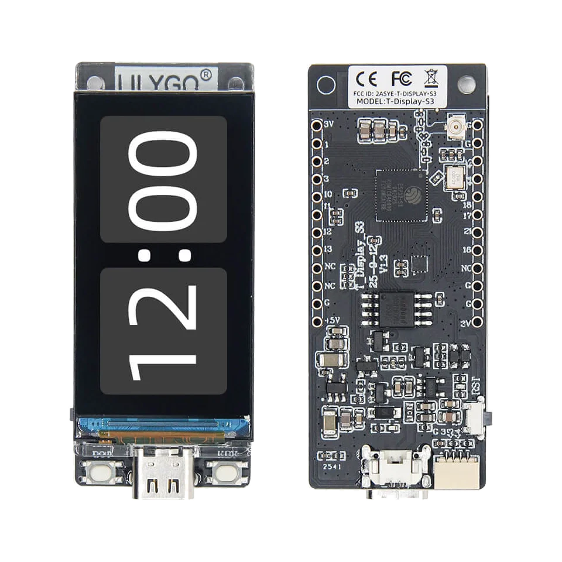

display status workflows
LILYGO T-Display S3: ESP32-S3 firmware, Qwiic I2C and GPIO
Use the LILYGO T-Display S3 when a visible screen, Qwiic/I2C access and compact ESP32-S3 form factor fit the bench task. It fits display-assisted ESP32-S3 checks, Qwiic/I2C experiments and compact hardware debugging when you still want visible feedback on the device.

Board-specific guide for LILYGO T-Display S3 firmware, display status workflows, Qwiic/I2C checks and ESP32-S3 debugging.
compatibility
T-Display S3 board overview
Use this page to decide whether this board is the right physical target before flashing ESP32 Bit Pirate.
practical tasks
T-Display S3 supported workflows
These workflows highlight good starting points for this board; SPI, I2C, UART and GPIO-style modes can be used when the board mapping and wiring expose the needed signals.
Scan sensors and EEPROM-style devices through the connector when voltage and pullups are correct.
Use USB connection for CLI access and browser-based terminal checks.
Use exposed pins for SPI probes, pulse, listen and measure tasks with planned wiring.
Use the display-oriented form factor when feedback on the device matters.
T-Display S3 pin mapping and wiring notes
Avoid pins consumed by the display and buttons. Use the Qwiic connector for I2C workflows and confirm any exposed pin before using it as a generic DIO/SPI/UART signal.
Always verify voltage and pin mapping before connecting a target. The ESP32-S3 side is not 5 V tolerant unless external level shifting or the Dock path is used correctly.
useful pages
T-Display S3 useful next pages
Move from this board to the protocol mode, task recipe, module page or browser tool that fits the hardware you want to test.
Protocol modes
Useful recipes
Use the task guide for wiring, commands and troubleshooting.
Bridge UART consoleUse the task guide for wiring, commands and troubleshooting.
Measure GPIO frequencyUse the task guide for wiring, commands and troubleshooting.
Choose GPIO pinout before wiringUse the task guide for wiring, commands and troubleshooting.
Tools and hardware
Open the browser tool or hardware page that supports this board workflow.
Web FlasherOpen the browser tool or hardware page that supports this board workflow.
Hardware ecosystemOpen the browser tool or hardware page that supports this board workflow.
Modules and target chipsOpen the browser tool or hardware page that supports this board workflow.
board-specific answers
T-Display S3 FAQ
Quick answers to confirm board support, practical limits and recommended workflows before flashing ESP32 Bit Pirate.
Is T-Display S3 supported by ESP32 Bit Pirate?
Yes. It has a supported board page and dedicated Web Flasher route.
What is the main advantage of T-Display S3?
The integrated display gives visible feedback while keeping a compact footprint.
Can I use Qwiic I2C devices?
Yes, Qwiic I2C workflows are a natural fit when the device voltage and pullups are compatible.
Is it better than DevKit for wiring?
No. DevKit is still cleaner when you need labeled headers, many simultaneous signals or repeatable bench wiring.
Should I use it for SPI flash clips?
Only when the needed pins are safely available. DevKit or Dock is usually cleaner for flash clip work.

source project
Part of the ESP32 Bit Pirate ecosystem
ESP32 Bit Pirate combines ESP32-S3 firmware, Web Flasher manifests, browser tools, protocol pages, recipes, supported boards, modules and companion hardware. These board pages help people discover the open-source Bit Pirate project from the board they already own or want to flash.